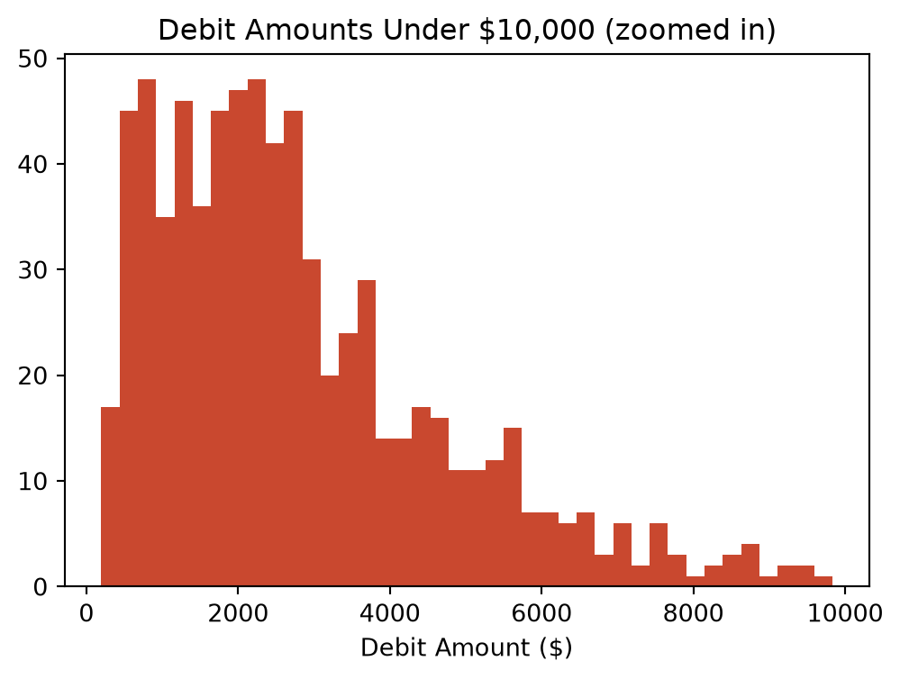

By the end of this chapter, you should be able to:
Explain the goals of exploratory data analysis (EDA) and where it fits in the analytics workflow
Choose appropriate summary statistics based on a variable’s level of measurement
Compute and interpret measures of central tendency and dispersion for financial data
Visually inspect the distribution of a financial variable and recognize skewness
Distinguish between an outlier and an error, and apply the z-score and IQR methods to flag unusual transactions
Perform a first-pass EDA on transaction-level general ledger data, including comparisons across categories
5.1 What Is EDA, and Why Do It First?
Exploratory data analysis (EDA) is the process of getting to know a dataset — its shape, its typical values, its oddities — before you calculate ratios (Chapter 7), run audit tests (Chapter 8), or build a predictive model (Chapter 12). Skipping this step is one of the most common ways analytics work goes wrong: it’s easy to compute a technically correct number from data you don’t actually understand yet, and end up with a confidently wrong conclusion.
The EDA mindset is simple: look before you calculate. Let the data surprise you before you start asking it questions.
This chapter introduces EDA using a new dataset: general_ledger_large.csv, a simulated general ledger with 1,504 transaction lines (752 journal entries) spanning a full fiscal year. It’s large enough to show real distribution shapes and genuine outliers — something our earlier 10–20 row samples were too small to demonstrate convincingly.
import pandas as pdgl_pd = pd.read_csv("data/general_ledger_large.csv")print(gl_pd.shape)gl_pd.head()
(1504, 7)
entry_id
entry_date
account
debit
credit
department
posted_by
0
JE3253
2025-01-01
Cost of Goods Sold
1231.76
0.00
Operations
mchen
1
JE3253
2025-01-01
Inventory
0.00
1231.76
Operations
mchen
2
JE3413
2025-01-01
Accounts Receivable
3024.76
0.00
Sales
agarcia
3
JE3413
2025-01-01
Sales Revenue
0.00
3024.76
Sales
agarcia
4
JE3476
2025-01-01
Cash
4476.03
0.00
Sales
rpatel
import polars as plgl_pl = pl.read_csv("data/general_ledger_large.csv")gl_pl.head()
shape: (5, 7)
entry_id
entry_date
account
debit
credit
department
posted_by
str
str
str
f64
f64
str
str
"JE3253"
"2025-01-01"
"Cost of Goods Sold"
1231.76
0.0
"Operations"
"mchen"
"JE3253"
"2025-01-01"
"Inventory"
0.0
1231.76
"Operations"
"mchen"
"JE3413"
"2025-01-01"
"Accounts Receivable"
3024.76
0.0
"Sales"
"agarcia"
"JE3413"
"2025-01-01"
"Sales Revenue"
0.0
3024.76
"Sales"
"agarcia"
"JE3476"
"2025-01-01"
"Cash"
4476.03
0.0
"Sales"
"rpatel"
5.2 Choosing the Right Summary Statistic
Recall from Chapter 3 that a variable’s level of measurement determines which calculations are actually meaningful:
Level
Example in this dataset
Meaningful summary
Nominal
account, department, posted_by
Count, mode
Ratio
debit, credit
Mean, median, std, all arithmetic
It’s worth pausing on this before diving into code. department is nominal — Sales, Operations, HR, Finance are categories with no inherent order. Computing an “average department” is meaningless. debit, on the other hand, is ratio-level — dollar amounts have a true zero and every arithmetic operation applies. The rest of this chapter focuses on summarizing debit and credit, and counting (not averaging) categorical fields like department.
Let’s compute the mean, median, and mode of transaction debit amounts (restricting to rows where a debit actually occurred, since half the rows in a double-entry dataset have a debit of 0).
Notice the mean ($4,044) is noticeably higher than the median ($2,457). This is a classic sign of a right-skewed distribution: most transactions are modest in size, but a handful of very large ones pull the mean upward. The median is a more representative “typical transaction size” here — a pattern you’ll see constantly in financial data, and a good reason to always check both rather than reporting the mean alone.
TipConnect to Practice
When a client or manager asks for “the average transaction size,” it’s worth asking whether they want the mean or the median — for skewed financial data, these can tell noticeably different stories, and reporting only the mean can be misleading.
5.4 Measures of Dispersion
Central tendency tells you where the data is centered; dispersion tells you how spread out it is.
Standard deviation: 11497.579308527369
Variance: 132194329.95587671
IQR: 2576.855
Coefficient of variation: 2.843074710831533
ImportantWhy the Coefficient of Variation?
Standard deviation alone can’t tell you whether an account is “volatile” in any meaningful sense, because it’s on the same scale as the data itself — a standard deviation of $10,000 is huge for a Rent Expense account but unremarkable for total Sales Revenue. The coefficient of variation (standard deviation ÷ mean) is a unitless ratio, which makes it possible to fairly compare variability across accounts of very different sizes — something we’ll do in the grouped EDA section below.
5.5 Understanding Distributions
Numbers alone don’t always reveal a distribution’s shape — visualizing it does. Full charting techniques are the focus of Chapter 6, but a histogram and boxplot are useful enough that we’ll use them here too.
Look closely at the histogram: nearly every bar is crammed into the leftmost sliver of the chart, because a handful of very large transactions stretch the x-axis all the way out to $176,500. This is a common problem with skewed financial data — the outliers you’ll learn to detect in the next section can also distort your ability to see the underlying distribution. A quick fix: zoom in by temporarily excluding the extreme values.
zoomed = debit_pd[debit_pd <10000]plt.figure(figsize=(6, 4))plt.hist(zoomed, bins=40, color="#c9482f")plt.title("Debit Amounts Under $10,000 (zoomed in)")plt.xlabel("Debit Amount ($)")plt.show()print(f"{len(zoomed)} of {len(debit_pd)} transactions shown ({len(zoomed)/len(debit_pd):.1%})")

731 of 752 transactions shown (97.2%)
Zooming in reveals what was hidden before: a right-skewed but otherwise unimodal (single-peaked) distribution, with most transactions clustered in the low thousands of dollars. This confirms numerically what we already suspected from the mean-vs-median gap: skewness, not a data error, largely explains the shape.
TipConnect to Practice
A bimodal distribution (two distinct peaks) in an account balance often signals that two different populations have been lumped into one account — for example, a “Travel Expense” account mixing routine local travel with occasional expensive international trips. Spotting this kind of pattern is often the first clue that a variable needs to be split or segmented before further analysis.
5.6 Detecting Outliers
An outlier is a value that differs substantially from the rest of the data. Whether it’s a mistake or a legitimate rare event is a judgment call — statistics can only flag candidates for you to investigate, not make that determination on its own.
5.6.1 The Z-Score Method
A z-score measures how many standard deviations a value is from the mean. A common rule of thumb flags anything with |z| > 3 as an outlier.
Notice the IQR method flags 38 transactions — far more than the 7 flagged by the z-score method. This isn’t a bug; it’s a real methodological difference:
ImportantZ-Score vs. IQR: Why Do They Disagree?
The z-score method uses the mean and standard deviation, both of which are themselves heavily influenced by extreme values — a few huge transactions inflate the standard deviation, which makes the z-score threshold more forgiving. The IQR method uses the median and quartiles, which are far more resistant to extreme values, so it stays “strict” even when a few huge outliers are present. In practice, this means:
The z-score method here caught only the most extreme injected anomalies (all above $60,000)
The IQR method also caught moderately large, but still plausible, legitimate transactions
Neither method is “correct” on its own — the IQR method casts a wider net and will produce more false positives requiring manual review, while the z-score method may miss moderately unusual transactions when the data itself is highly skewed. In practice, many audit and fraud analytics workflows use IQR-style thresholds as a first-pass filter specifically because it’s more sensitive, and treat the resulting list as candidates for follow-up, not confirmed problems.
5.6.3 Outlier or Error? A Judgment Call
Statistical flagging is only the first step. Consider the seven z-score outliers above — some questions a real investigation would ask:
Is a $176,500 sale plausible for this business, or does it look like a data entry error (an extra digit)?
Two of the flagged transactions were posted on a weekend — is that normal for this company, or unusual enough to warrant follow-up?
Do the posting employees for these entries normally handle transactions of this size?
Two of the seven outliers were posted on a Saturday or Sunday — worth flagging for follow-up, since unusual timing combined with an unusually large amount is a stronger signal than either one alone. We’ll build on exactly this kind of reasoning in Chapter 9 (Fraud Detection and Anomaly Detection).
5.7 Grouped EDA: Comparing Across Categories
Summary statistics computed on the whole dataset can hide differences between groups. Let’s compare debit amounts by department.
Finance has by far the lowest variability (small coefficient of variation) — consistent with routine, predictable transactions like depreciation and insurance amortization.
Sales and HR show much higher variability, partly because several of our injected large outliers landed in those departments.
Operations has the highest transaction count by far, reflecting frequent inventory and vendor-payment activity.
This kind of grouped comparison is often how an unusual pattern first gets noticed — not from a single transaction, but from one department’s numbers looking different from the others in a way that invites a closer look.
5.8 Putting It Together: A First-Pass EDA Checklist
The steps in this chapter form a reusable sequence you can apply to any new dataset before moving on to deeper analysis:
Check shape and structure — row/column count, data types (Chapter 3–4 territory)
Choose appropriate summary statistics based on each variable’s level of measurement
Compute central tendency and dispersion — and compare mean vs. median for signs of skew
Visualize the distribution — histogram and boxplot, zooming in if outliers dominate the scale
Flag outliers — using both z-score and IQR methods, since they disagree in informative ways
Compare across categories — group by a relevant categorical variable (department, account, employee) to see if any group stands out
We applied all six steps to general_ledger_large.csv in this chapter. In Chapter 6, we’ll build on this foundation with more advanced and polished visualizations; in Chapters 8–9, we’ll apply this same EDA mindset directly to audit and fraud analytics tasks.
5.9 Chapter Summary
EDA means getting to know your data — its center, its spread, its shape, its oddities — before running any formal analysis, audit test, or model.
A variable’s level of measurement determines which summary statistics are meaningful; this dataset’s ratio-level debit/credit columns support full arithmetic, while nominal columns like department only support counting.
Mean and median can diverge substantially in skewed financial data — always check both, since the mean alone can be misleading.
The coefficient of variation allows fair comparison of variability across accounts or groups on very different scales.
Histograms can be distorted by extreme outliers; zooming in (temporarily excluding extreme values) often reveals the true underlying shape.
The z-score and IQR methods for outlier detection can disagree substantially — IQR is more sensitive (and produces more false positives) since it’s based on the more outlier-resistant median and quartiles, while z-score is based on the more outlier-sensitive mean and standard deviation.
A flagged outlier is not automatically an error — determining that requires investigation and accounting judgment, not just a statistical threshold.
Grouped EDA (comparing summary statistics across categories) is often how an unusual pattern first becomes visible.
5.10 Discussion Questions
Why does the mean of the debit amounts in this chapter’s dataset exceed the median? What would it mean if the opposite were true — median greater than mean?
The IQR method flagged 38 transactions, the z-score method only 7. If you were leading an audit team with limited time, which method would you use for an initial screen, and why?
Two of the seven z-score outliers were posted on a weekend. On its own, is a weekend posting evidence of a problem? What additional information would make you more or less concerned?
5.11 Exercises
Using general_ledger_large.csv, compute the mean, median, and standard deviation of debit for just the Sales department, and compare it to the whole-dataset statistics computed in this chapter.
Re-run the z-score and IQR outlier detection methods using the credit column instead of debit. Are the same journal entries flagged? Explain why or why not, given how the dataset is structured.
Produce a histogram of debit amounts grouped by department (four separate histograms, or one overlaid chart) and describe, in a few sentences, how the distributions differ across departments.
Pick one of the seven z-score-flagged outliers. Write a short (100-word) memo describing what additional information you would request before concluding whether it’s a legitimate transaction or an error.